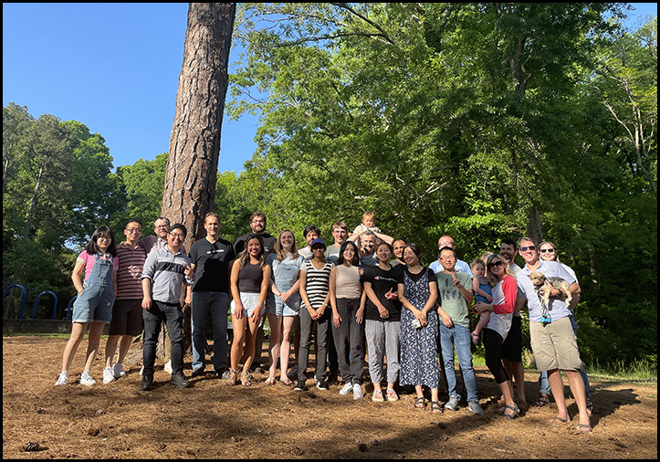

UGA and Athens, GA
The University of Georgia has a vibrant research community with particular strengths in Plant Genomics. A weekly meeting referred to as the Plant Functional Genomics Group provides a unique venue to explore recent findings in a highly interactive setting. Additionally, the Plant Center hosts two symposia twice a year with a mix of outside and campus speakers. Additional campus strengths include evolutionary genetics, bioinformatics and genomics.In addition to being a great place for employment, Athens is a great place to live for scientists in training as it is affordable and located in a region that enjoys mild winters. It's a classic college town with an active community that enjoys the outdoors, including many nearby parks and hiking trails. The University borders downtown Athens where researchers commonly meet to socialize at local restaurants and breweries. On any given night in Athens great live music can be found as Athens is a popular spot for musicians whether they are launching their career or are veterans of the industry.
Available Positions
PostdoctoralWe are looking for highly motivated postdoctoral fellows who are interested in studying patterns of population epigenomic diversity across a wide-range of species and/or mechanisms of epigenetic
inheritance. Ideally, applicants should excel in at least two fo the following research areas: bioinformatics/computational biology, genomics, molecular biology, plant genetics, population genetics, non-model plant systems or evolutionary biology.
Graduate
Graduate students interested in studying population epigenomics and mechanisms of epigenetic inheritance using high-throughput genomic, computation and molecular genetics approaches should contact Bob Schmitz for additional details.
Undergraduate
We are seeking eager students that would like acquire laboratory research experience in a wide-range of laboratory techniques such as genetics, molecular biology, computational biology and plant biology.